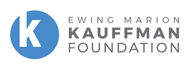

Center for Entrepreneurship Partnering with Ewing Marion Kauffman Foundation
Empowering Entrepreneurs through Kauffman FastTrac Programs
Since 2004, Boster has been partnering with the Ewing Marion Kauffman Foundation to organize the Kauffman FastTrac® programs. More than 840 entrepreneurs have acquired vital business skills through these programs. Kauffman FastTrac® provides relevant content and tools to support the start, growth, and sustainability of businesses. It equips aspiring entrepreneurs with the necessary business skills, insights, tools, resources, and peer networks for launching and growing successful ventures. The curriculum is not industry-specific, making it relevant for entrepreneurs of all types. Participants can access modules in any order, taking as much or as little time as needed. They benefit from quizzes, assignments, and step-by-step guides from ideation to launch. Notably, 90% of participants have applied lessons from the program to aid in starting or growing their businesses, and 91% would recommend it to friends.
Partnership Highlights
The Ewing Marion Kauffman Foundation, founded by entrepreneur and humanitarian Ewing Marion Kauffman, has a profound history of supporting entrepreneurship and innovation. Based in Kansas City, the foundation's initiatives have benefitted millions. Their collaboration with Boster leverages the foundation's legacy to support new business ventures through the FastTrac programs. The programs offer flexible learning solutions, including access to valuable content and practical tools. By emphasizing real-world applications of business concepts, the FastTrac programs have been instrumental in fostering entrepreneurial success stories. This partnership has consistently contributed to the development of robust entrepreneurial ecosystems, helping startups and established businesses alike to thrive.
